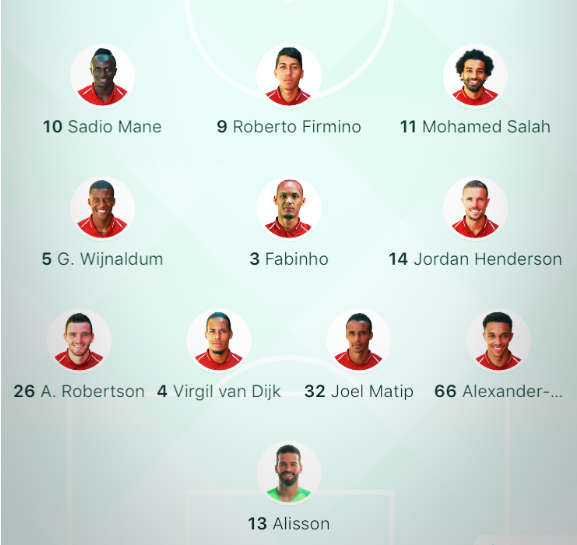

축구_리버풀_전술
리버풀은 주로 4-3-3 포메이션을 사용하며 공격시엔 3-4-1-2 형태를 띠면서 수비시엔 4-3-3 형태를 띤다. 리버풀은 베스트 11 포메이션이 확실하게 갖춰줘 있는 팀이기 때문에 전술의 변화는 많이 없는 편이다. 공격시엔 아놀드와 로버트슨의 적극적인 오버래핑을 통해서 크로스를 통한 득점을 많이 올린다. 피르미누가 2선까지 내려와 연계 역할을 해주고 살라와 마네가 1선으로 침투해 득점을 올린다. 파비뉴는 포백 보호 역할을 맡으며 센터백 앞에 머무르며 전진을 거의 하지 않는다.(물론 간헐적인 전진을 통해 창의적인 패스를 뿌려주기도 한다.) 베이날둠과 헨더슨은 공격시엔 중앙과 측면을 넘나들며 연계를 돕고 수비시엔 2~3선의 측면을 수비해주거나 풀백들의 오버래핑 후 허용되는 뒷공간을 커버하기 위해 4선으로 내려와 쓰리백을 만들기도 한다.